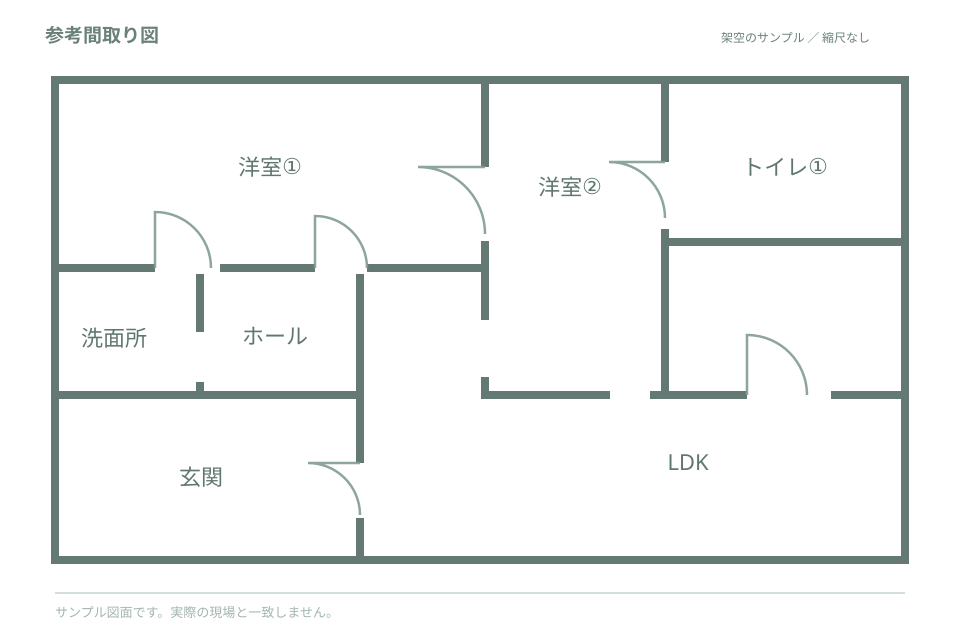

PRESENTATION WORKSPACE住まいの建具を、
住まいの建具を、
もっとわかりやすく。
見積内容を確認しながら、商品一覧と間取り図を一つの資料にまとめます。
建具アイテム—件
図面に配置済み—件
商品画像登録—件
データ保存先この端末サーバー送信なし
見積書の読取・精度検証実帳票の精度は未測定
最初に帳票の列と表の範囲を合わせてください。初期設定は架空サンプル用です。PDF・正解データはこのブラウザ内で処理します。
1. 固定レイアウトを設定
継続の判断は固定帳票の前提です。明細原文とページ番号で確認してください。複数の型番・寸法などが競合した場合は「要確認」にします。
見積書PDFを選択してください。スキャンPDFは左のOCRボタンから実行します。
2. 原本と列範囲を確認
PDF読込後、ここに表と列境界を表示します。
列順：建具番号 → 設置場所 → 商品型番 → 建具種類 → 寸法
3. 抽出候補を確認・修正
読取結果はまだありません。
抽出時点・手修正後のJSON
4. 正解データと比較
正解JSONのitemsを原本のWD出現順に並べます。同じ出現順で対応付け、文字列を正規化せず比較します。追加・欠落も不一致として分母に含めます。抽出時点と手修正後の結果を別々に表示します。
実帳票の正解データがないため、精度は未測定です。
EDIT DETAILS
建具リスト
自動抽出した情報は必ず確認し、必要に応じて修正してください。
LIVE PREVIEW
A4横想定プレビュー
INTERIOR DOOR SELECTION
室内建具 ご提案資料
PRESENTATION BOARD
建具の種類・設置場所・品番をご確認ください。
※ 画像は参考イメージです。実際の商品仕様・色味はメーカーの資料と照合してください。

※ 仮配置は部屋名の文字位置を使う参考候補です。建具開口部の正確な自動判定ではありません。